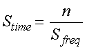
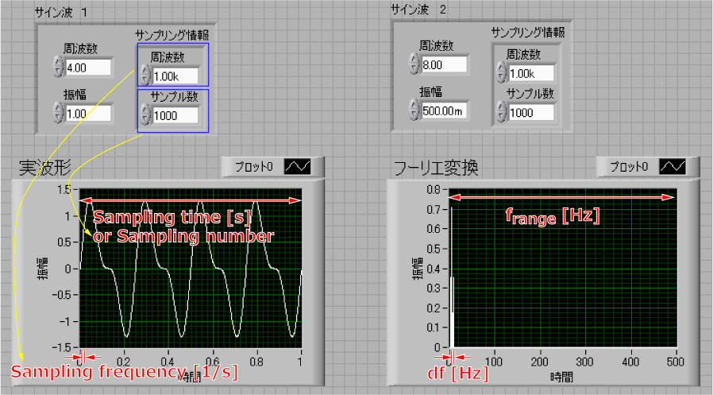

さて，もう少し詳しく，実波形と，フーリエ変換との関係を見ていきましょう．
実際にデータ解析に回す，実波形のデータは，
デジタル化
しています．
そこで，そのときの情報としては，
サンプリング周波数
サンプル数
があります．
サンプリング周波数とは，
1秒間に何回データを取得しているか
と言うもので，次元は，[1/s]，となります．
この逆数で，
サンプリングレート [s]
と言う考え方もあります．
これは，
何秒に1回，データを取得しているか
と言うものですね．
サンプル数は，もちろん，
1回の取得でいくつのデータを取得したか，
となります．
そこで，得られた波形の全長，サンプル時間は，サンプリングレートの次元を[1/s]で考えると，

となります．
実際に波形を見てもらった方がわかりやすいでしょう．

上の図では，
サンプリング周波数：周波数 [1/s] = 1000
サンプル数：サンプル数 = 1000
で表しています．
ですので，実波形の横幅は1秒となります．
では問題の，フーリエ変換した場合の，
周波数帯，frange [Hz]
周波数のレート，ｄｆ [Hz]
はどのように考えればいいのでしょう？
これは，各ソフト，によって若干変化しますが，LabView，の関数の場合，このようになっています．
ここで，
ｄｆ ： 横軸の周波数の最小単位 [Hz]
fnumber ： 横軸の周波数の数
frange ： 横軸の周波数の最大値（右端の値） [Hz]
となります．
つまり，実験データを解析する際に，
どのくらいの範囲の周波数を解析したいかは，サンプリング周波数をいじればいい
どのくらいの細かい周波数を解析したいかは，サンプリング周波数とサンプル数をいじればいい
と言うことなのです．
どのくらいの範囲の周波数を解析したいか，とは５００Hzまでの周波数のスペクトルを見たい，とか３００Hzまで，とかです．
どのくらいの細かい周波数を解析したいか，とは２０Hzの場所を見る場合に，１９，２０，２１Hzごとの変化か，１９．９，２０．０，２０．１Hzで区切るのか，と言うことですね．
次のページでは，窓関数について説明しましょう．